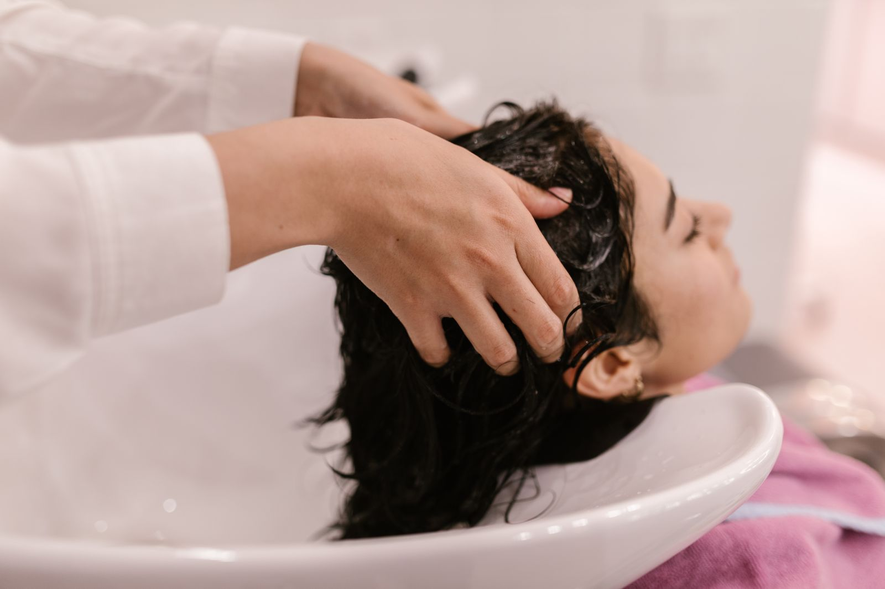

Le journal
Conseils cheveux afro
Nos guides pour entretenir, hydrater et sublimer les cheveux crépus, bouclés et frisés au quotidien.

Routine
La routine hydratation des cheveux afro
Pourquoi les cheveux crépus ont soif, et la méthode LOC pour retenir l’hydratation durablement.
Lire l’article →
Coiffures
Coiffures protectrices : le guide complet
Tresses, twists, locks : comment protéger vos longueurs et vos contours sans les abîmer.
Lire l’article →
Cuir chevelu
Prendre soin de son cuir chevelu
Un cuir chevelu sain, c’est la base d’une belle pousse. Nos gestes essentiels, sans excès.
Lire l’article →